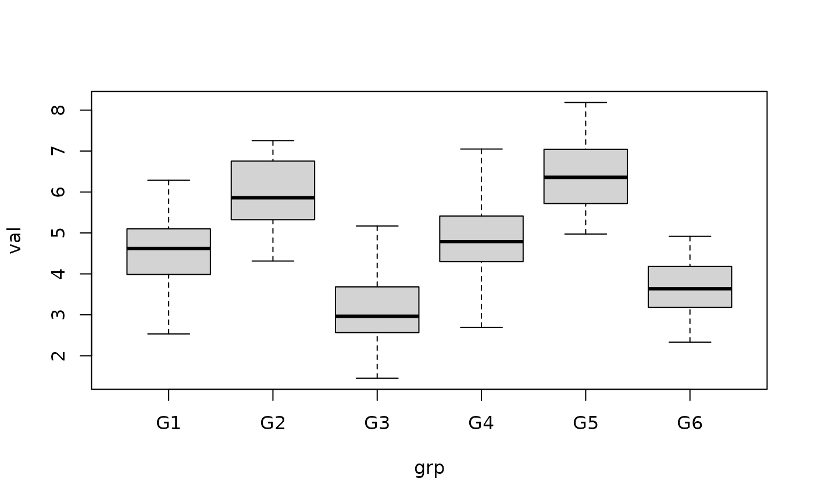
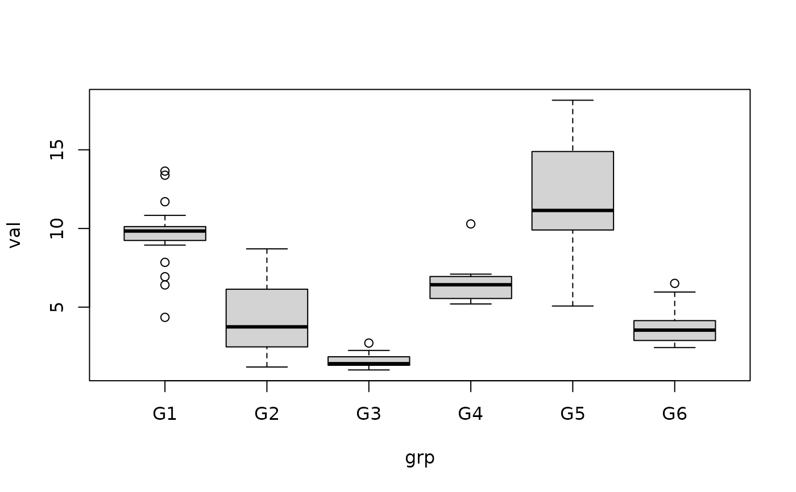

A collection of six simulated datasets representing different combinations of distributional assumptions, variance homogeneity, and sample-size balance. These datasets are designed for demonstrating and evaluating statistical procedures under a range of common experimental conditions.
Format
Six data frames, each containing the following two variables:
grpCharacter vector identifying the experimental group.
valNumeric vector containing the simulated response values.
The number of observations differs according to the experimental design: balanced datasets contain 120 observations (20 per group), whereas unbalanced datasets contain 128 observations with group sizes of 27, 24, 16, 30, 11, and 20.
An object of class data.frame with 100 rows and 2 columns.
An object of class data.frame with 128 rows and 2 columns.
An object of class data.frame with 128 rows and 2 columns.
An object of class data.frame with 120 rows and 2 columns.
An object of class data.frame with 120 rows and 2 columns.
An object of class data.frame with 110 rows and 2 columns.
Details
All datasets contain six groups (G1 to G6) and two variables:
grpA character variable identifying the group.
valA numeric response variable.
The dataset names follow a three-character notation separated by
underscores: D_V_B, where each position describes a different property
of the data:
- First position (
D) Distribution.
Oindicates normally distributed data, whereasXindicates distribution-free or non-normally distributed data.- Second position (
V) Variance.
Oindicates homoscedasticity, whereasXindicates heteroscedasticity.- Third position (
B) Design balance.
Oindicates a balanced design, whereasXindicates an unbalanced design.
The six datasets are:
O_O_ONormally distributed, homoscedastic, and balanced-designed data. Each group contains 20 observations.
O_O_XNormally distributed, homoscedastic, and unbalanced-designed data. The group sample sizes are 27, 24, 16, 30, 11, and 20, respectively.
O_X_XNormally distributed, heteroscedastic, and unbalanced-designed data. The group sample sizes are 27, 24, 16, 30, 11, and 20, respectively.
X_O_ODistribution-free or non-normally distributed, homoscedastic, and balanced-designed data. Each group contains 20 observations.
X_X_ODistribution-free or non-normally distributed, heteroscedastic, and balanced-designed data. Each group contains 20 observations.
X_X_XDistribution-free or non-normally distributed, heteroscedastic, and unbalanced-designed data. The group sample sizes are 27, 24, 16, 30, 11, and 20, respectively.
The normally distributed datasets were generated using
stats::rnorm(). The distribution-free datasets were generated using
combinations of stats::rcauchy(), stats::runif(), and
stats::rgamma(), together with stats::rnorm(). Different location and
scale parameters were used to produce the intended distributional and
variance characteristics.
These datasets are intended for methodological examples, unit tests, demonstrations, and comparisons of statistical procedures under different combinations of assumptions. They should not be interpreted as empirical observations from a real population.
Dataset characteristics
| Dataset | Distribution | Variance | Design |
O_O_O | Normal | Homoscedastic | Balanced |
O_O_X | Normal | Homoscedastic | Unbalanced |
O_X_X | Normal | Heteroscedastic | Unbalanced |
X_O_O | Non-normal | Homoscedastic | Balanced |
X_X_O | Non-normal | Heteroscedastic | Balanced |
X_X_X | Non-normal | Heteroscedastic | Unbalanced |
Examples
data(O_O_O)
boxplot(val ~ grp, data = O_O_O)

data(X_X_X)
boxplot(val ~ grp, data = X_X_X)

aggregate(val ~ grp, data = O_O_O, FUN = mean)
#> grp val
#> 1 G1 4.641624
#> 2 G2 5.948743
#> 3 G3 3.106485
#> 4 G4 4.880083
#> 5 G5 6.375095
#> 6 G6 3.640620
aggregate(val ~ grp, data = X_X_X, FUN = mean)
#> grp val
#> 1 G1 9.667313
#> 2 G2 4.302930
#> 3 G3 1.566811
#> 4 G4 6.490958
#> 5 G5 11.823754
#> 6 G6 3.790654